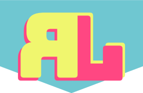
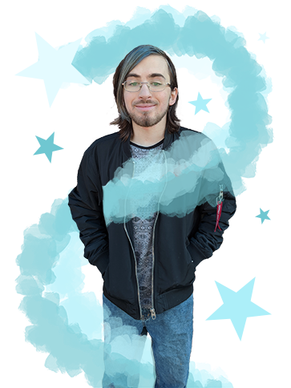
Illustration ou animation, design ou dessin, vidéo ou photo, les plus grandes forces de Robin Laperrière se démarquent toujours du coté créatif de ses projets.
S’il peut créer, il s’y plaira.
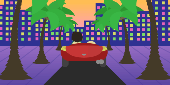
voir sur behance
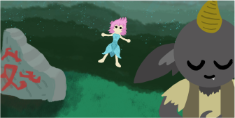
voir sur behance
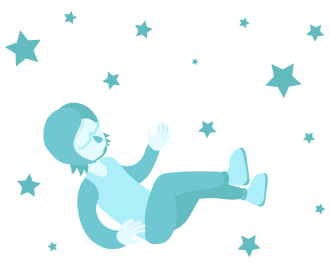
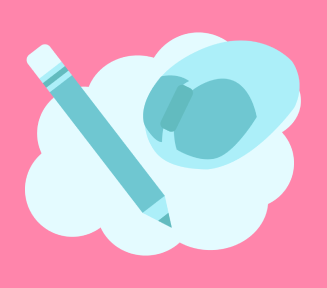
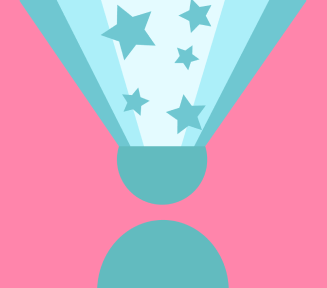
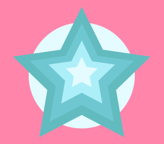
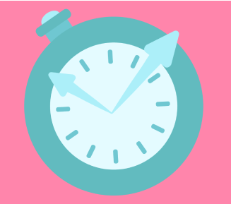
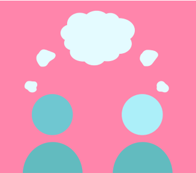
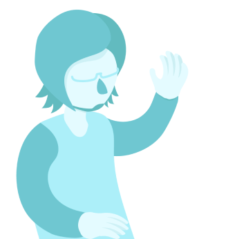
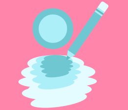
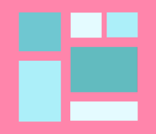
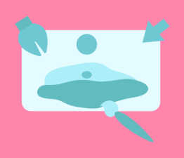
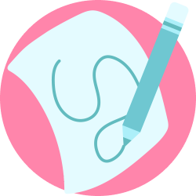
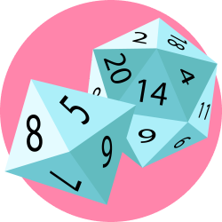
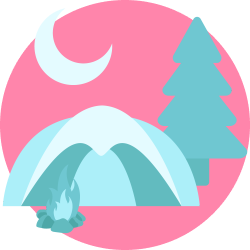
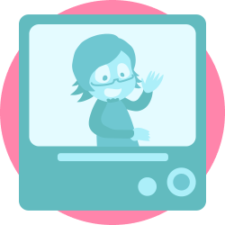
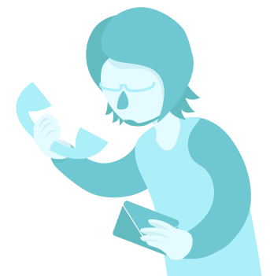
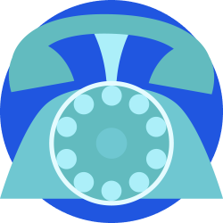